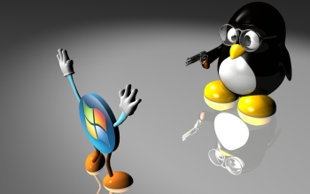

Linux (Линукс) или GNU/Linux е общото название, което се дава на всички операционни системи, основаващи се на ядрото „Linux“ и системните инструменти и библиотеки от проекта GNU. Различните такива операционни системи се наричат Linux-дистрибуции, като те се различават по това с какъв друг софтуер пристигат. Linux е флагман и един от най-известните представители на свободния софтуер.
Официалната емблема на Linux е топчест пингвин на име Тъкс (на английски: Tux) и е създадена от Лари Юинг (Larry Ewing) през 1996 г. Идеята за емблемата идва от Линус Торвалдс, създателят на ядрото на Linux – той е ухапан от пингвин, когато е бил в Австралия.
Проектът и движение GNU, чиято цел е създаване на нова операционна система свободен софтуер, е основан от Ричард Столман през 1984 г. Системата съдържа голям брой инструменти и програми, например компилатори, текстови редактори и сървъри. Софтуерът се разпространява с лиценза GNU GPL, което гарантира бъдещата му свободна достъпност. През 1991 г. към почти завършената операционна система е добавено ядрото Linux, написано от Линус Торвалдс. С Linux GNU става напълно работеща операционна система и това спомага за бързото ѝ разпространение.

Linux се развива по-бързо от Windows. Всяка забелязана грешка в него се поправя за около 1 до 2 дни, след което чрез Internet вие можете да получите софтуерът, който оправя тази грешка (безплатно, като задачата за инсталирането си е лично ваша). При комерсиалните UNIX системи този срок е до няколко седмици (не се изисква заплащане, задачата за инсталирането по-често не е ваша), а при Windows NT - повече няколко месеца до година (често срещу заплащане) (Някой грешки от областта на сигурността на Windows 95/NT, които съществуват от около 1 година, не са разрешени и до днес).
Фондацията за свободен софтуер настоява дистрибуциите на операционната система да се назовават GNU/Linux, защото всяка от тях използва компонентите на операционната система GNU (започната от Ричард Столман през 1984 г.) и ядрото, създадено от Линус Торвалдс, наречено Linux.